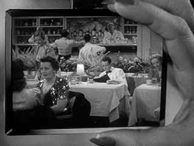

| Lady Eve, The (SE)/A,C+ |
| Criterion/1941/93/FS 1.33 |
I have never laughed so hard at The Lady Eve as this last visit on DVD. What a happy occasion to visit with such fine company. One of four amazing comedies written and directed by Preston Sturges in two years. What's so remarkable is that is the romantic elements hold up to the brilliant comedy. While you may burst a gut at the many perfectly delivered pratfalls, while you may delight in the witty slick dialogue, the romance is never deflated.
 |
| Taking a peak at Pike. ©Universal |
Charles "Hopsie" Pike, up the Amazon cuddling snakes, hops an
ocean liner to return home with a prize specimen. It turns out that Pike's a specimen too when con
queen Jean Harrington charms shy Pike out of the basket and into her arms. Companion and protector
Muggsy Murgatroyd catches a scent of the con lingering like cheap cologne on the Colonel
Harrington, Jean's father. Between decks of cards and ocean breeze romance flourishes, but Jean's
past catches up with her with the suddenness of a Hopsie pratfall.
After the ocean voyage of enchantment and disappointment, Jean dons a new
moniker and charms Hopsie Pike all over again as Lady Eve Sidwich. It's a chance for more breezy
romance and comedy played out in sly comic rhythms.
Sturges instinctively knows what's funny. He can peg the most humorous
aspects of his characters and he can make fun of them by having fun with them. When Sturges looks
askance at a character it's with a knowing wink. Man, can he milk a scene or a gag. The ultimate
card game in The Lady Eve build laugh upon laugh as Colonel Harrington and daughter Jean play
cards with their hearts up their sleeves with Hopsie's fate hanging on the call. Sturges can throw
a gag at you more than once and make you laugh at it harder each ensuing time. The reception for
Lady Eve Sidwich at the Pike mansion provides Sturges with a stage to topple Charles Hopsie Pike to
cherished distraction.
Sturges knows where to place the camera to capture to magically catch
comic perfection. His sense of timing, in each scene, in the entire film, is uncannily perfect. The Lady Eve features elegant production design, and Edith Head's costumes dress Barbara
Stanwyck better than ever before.
Barbara Stanwyck chews through rapid fire dialogue on par with the
best of the daffy queens of screwball comedy. She in great form as Jean/Eve. She's also more than
up to the romantic churnings underneath the tough slinky exterior. Henry Fonda is hilarious as the
innocent Hopsie. Fonda, not known for comedies, takes a fall with splendid panache. He moons and
muses his way through The Lady Eve with laconic charm in tact. Charles Coburn is a great ace
up director Sturges' sleeve. Coburn relishes every disreputable moment with larcenous class.
Sturges regular William Demarest mugs his way through Muggsy Murgatroyd with with a typically unabashed
performance. Eugene Pallette lends his robust foghorn voice to bring a clanging blissfulness to ale
scion poppa Pike.
There's lots of wear and tear on the source material. Dirt speckles and a few
scratches pop up here and there. Many scenes are too soft. It appears to have been worked
over digitally and many scenes appear too soft. A few spots of film shrinkage distort
the image momentarily. There's even a few frames that lose horizontal synch late in the film.
Contrast range is fine. Black level is consistent. Grain gets heavy in patches. The chromatic
costume combinations designed by Edith Head for Barbara Stanwyck are retain their desired effect.
The look of the film is preserved quite well. The sound is stable except for a brief passage at the
race track when it loses its breath. The special edition includes a fond introduction to the
film by director Peter Bogdanovich. A still photo scrapbook is included with lots of charming
behind the scenes shots. Edith Head costume sketches are included with written comments by Head. A
Lux Radio Theater broadcast adaptation starring Stanwyck and Ray Milland adds to the package.
There's a theatrical trailer as well. Film scholar Marion Keane provides a dry, often scholarly yet
affectionate, audio commentary.

Selections from the Feature Archive include articles on
Akira Kurosawa, Frank
Darabont, Blonde Bimbos, Hollywood Street Gangs, or Vietnam: The
Hollywood Pariah, and many more....
Sturges Emerges
Preston Sturges was Hollywood's resident comic genius for more than a decade. His movies are
timeless. Click on his image to read all about it.
Robert A. Harris
Tilting at Hollywood
He's part of the dynamic duo that restored Lawrence of Arabia, Spartacus, My Fair Lady and Vertigo.
Harris rides a white horse into the for the cause of preserving our film legacy. Click on the image
to read more.


The Movie Poster Archive includes extensive poster images from the films of stars like Susan Hayward, Kirk Douglas, Katharine Hepburn and many more. Our featured star is Doris Day.

 Have you visited Home Theater
Talk lately? One of the friendliest places on the Net for Home Theater and DVD discussion, you
can get help for installation problems or simply share your opinions with other Vidiots.
Have you visited Home Theater
Talk lately? One of the friendliest places on the Net for Home Theater and DVD discussion, you
can get help for installation problems or simply share your opinions with other Vidiots.
 Brad Lang continues to add more interesting material to the extensive
collection at Classic
Movies. Everything from actors and actress to your favorite directors is
linked at the site.
Brad Lang continues to add more interesting material to the extensive
collection at Classic
Movies. Everything from actors and actress to your favorite directors is
linked at the site.

News, information, features about current films in theaters and in the
pipeline. Easy to use interface.

The official site for information about the great comic director. A treat for connoisseurs of
classic Hollywood madcap.